ALLEGIANCE / EQUIPMENT / HOMEWORLDS
Races &
Great Houses.
The plugin’s five selectable factions, drawn from the current field manual. Choose an allegiance, equip its stillsuit and learn its abilities.
These choices are implemented as factions rather than biological race classes. Spacing Guild NPCs support travel; the Guild is not a selectable faction.

ARRAKIS / ORANGE STILLSUIT
Fremen
Unbreaking III on every kit piece; Swift Sneak III on leggings. Two spice units per deposit.
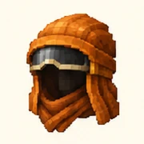
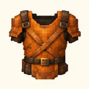
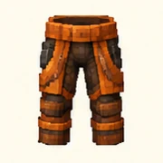
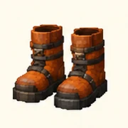
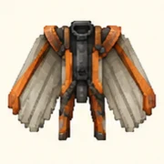
Wear all four tagged stillsuit pieces for Arrakis sun protection and the matching full-set effects. Winged upgrades use a carried Elytra and cost 1,000,000 Solaris.
Read the equipment chapter →
GIEDI PRIME / RED STILLSUIT
Harkonnen
Combat damage +15%; matching full set refreshes Strength II.
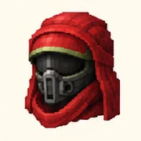
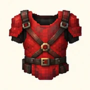
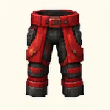
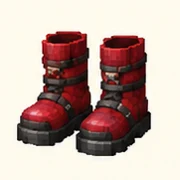
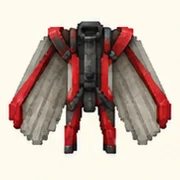
Wear all four tagged stillsuit pieces for Arrakis sun protection and the matching full-set effects. Winged upgrades use a carried Elytra and cost 1,000,000 Solaris.
Read the equipment chapter →
KAITAIN / PURPLE STILLSUIT
Corrino
Protection III on kit armor; entity-caused incoming combat damage is reduced by 15%.
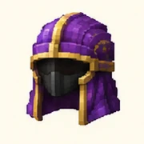
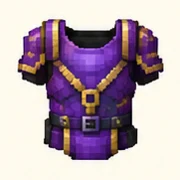
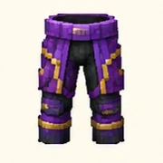
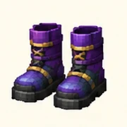
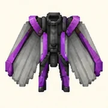
Wear all four tagged stillsuit pieces for Arrakis sun protection and the matching full-set effects. Winged upgrades use a carried Elytra and cost 1,000,000 Solaris.
Read the equipment chapter →
CALADAN / BLUE STILLSUIT
Atreides
Movement can refresh Speed I. Matching full set adds four hearts while equipped.
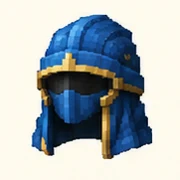
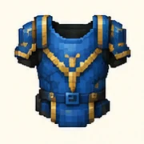
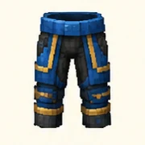
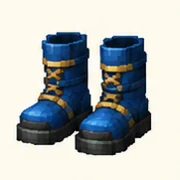
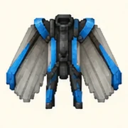
Wear all four tagged stillsuit pieces for Arrakis sun protection and the matching full-set effects. Winged upgrades use a carried Elytra and cost 1,000,000 Solaris.
Read the equipment chapter →
SIGMA DRACONIS IV / GREEN STILLSUIT
Ordos
Matching full set enables five-second Shadow Step on main-hand Ender Pearl use.

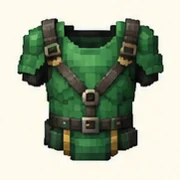
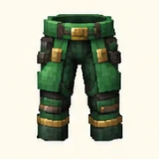
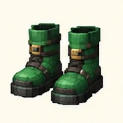

Wear all four tagged stillsuit pieces for Arrakis sun protection and the matching full-set effects. Winged upgrades use a carried Elytra and cost 1,000,000 Solaris.
Read the equipment chapter →BEFORE YOU CHOOSE
Wear your allegiance.
A normal player cannot change an existing faction selection. Choosing supplies a kit and requests a free first homeworld arrival. The kit enters your inventory; equip it yourself. Renamed or merely dyed armor does not replace the plugin’s tagged gear.
Read faction rules →World art is illustrative. Arrakis has the full gameplay guide; other worlds have terrain profiles and reserved expansion chapters.